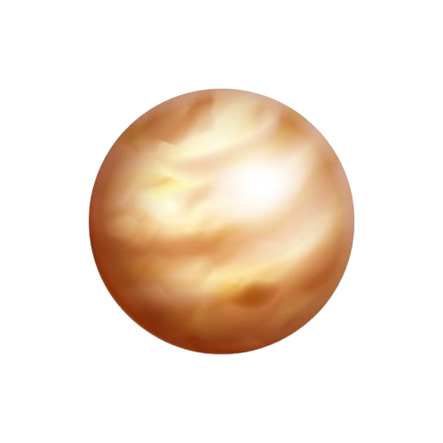

الزهرة هو الكوكب الثاني من الشمس ويعتبر الكوكب الأكثر حرارة في النظام الشمسي. يتميز بوجود غلاف جوي كثيف يتكون أساسًا من ثاني أكسيد الكربون، مما يؤدي إلى ظاهرة الاحتباس الحراري. سطحه صخري ومليء بالفوهات والجبال.
تدور الزهرة حول نفسها ببطء، حيث يستغرق يوم واحد فيها حوالي 243 يومًا أرضيًا، بينما تستغرق دورة حول الشمس حوالي 225 يومًا. يُعرف الزهرة أيضًا بـ "نجمة الصباح" و"نجمة المساء" بسبب لمعانه في السماء.
